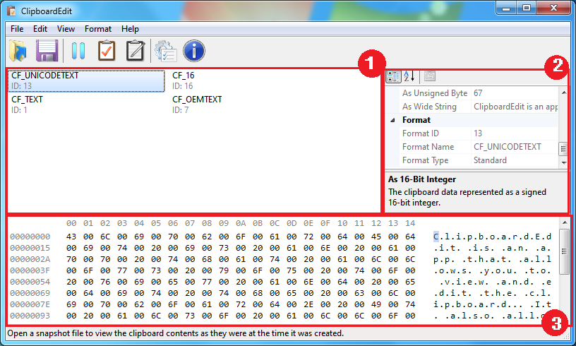

User interface
In order to use ClipboardEdit, you must learn the user interface (UI) and how to use it. In ClipboardEdit, the UI is split into 3 panes.

- Format List: Displays the current clipboard formats. Select a format in the list to view its information in the other panes.
- Property Window: Shows information about the selected clipboard format, such as the data size and different representations of the data.
- Hex view: Displays the actual hexadecimal data of the selected format and allows you to edit it. Once you're done editing, press the Write Changes button on the toolbar. Remember, you can always go to Edit -> Show Documentation to view the information about the format and what the data means.
Notes
- You can resize the panes using the splitter between them.
- Use the View menu on the menu bar to show or hide panes.